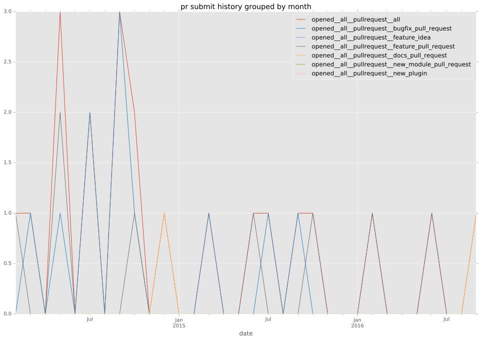
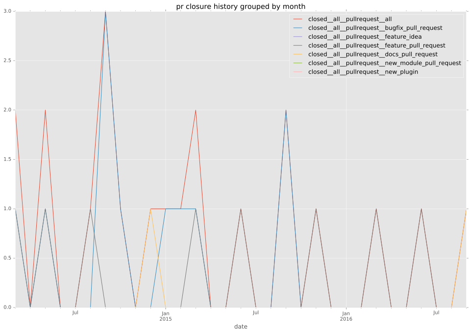
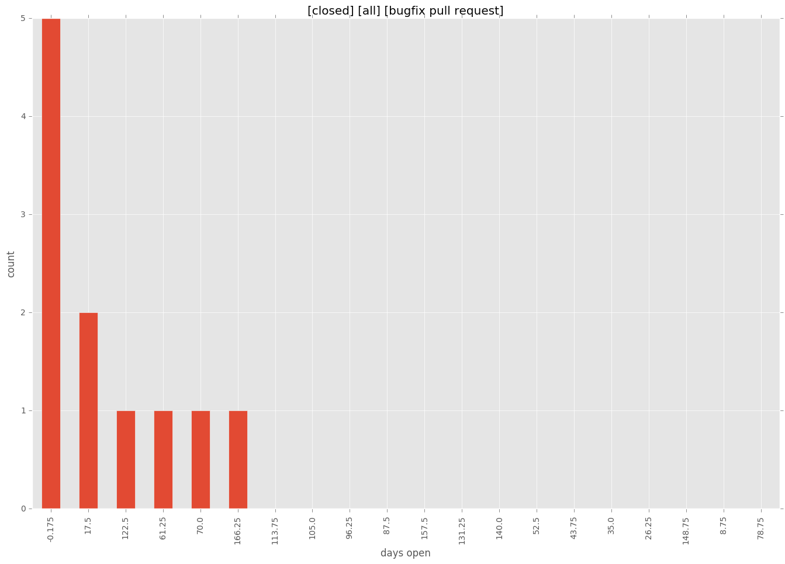

authors
- dmtrs
- resmo
maintainers
- dmtrs
- resmo
contributors
- dmtrs : 20 commits
- resmo : 14 commits
- geschke : 6 commits
- r0b1n : 3 commits
- mpdehaan : 2 commits
- komuta : 2 commits
- himyouten : 2 commits
- jails : 1 commits
- acrobat : 1 commits
- abadger : 1 commits
total issue counts
bugfix pull request: 11
pullrequest: 20
docs pull request: 2
feature pull request: 7
issue: 5
bug report: 5
issue history
pullrequest history


days open by issue type
feature pull request
count: 12
std: 57.1367312734
min: 0
max: 149
median: 12.0
mean: 42.6666666667
all
count: 37
std: 57.3145396602
min: 0
max: 196
median: 12.0
mean: 39.6486486486
pullrequest
count: 0
std: nan
min: nan
max: nan
median: nan
mean: nan
docs pull request
count: 4
std: 0.57735026919
min: 0
max: 1
median: 0.5
mean: 0.5
bugfix pull request
count: 16
std: 56.15514224
min: 0
max: 175
median: 18.0
mean: 40.75
issue
count: 0
std: nan
min: nan
max: nan
median: nan
mean: nan
bug report
count: 5
std: 81.6621087163
min: 1
max: 196
median: 20.0
mean: 60.2
closures grouped by total days open
